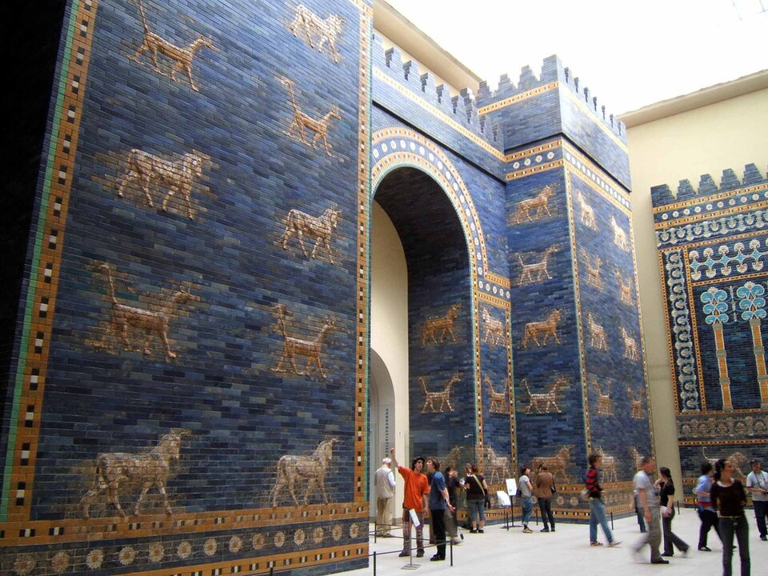
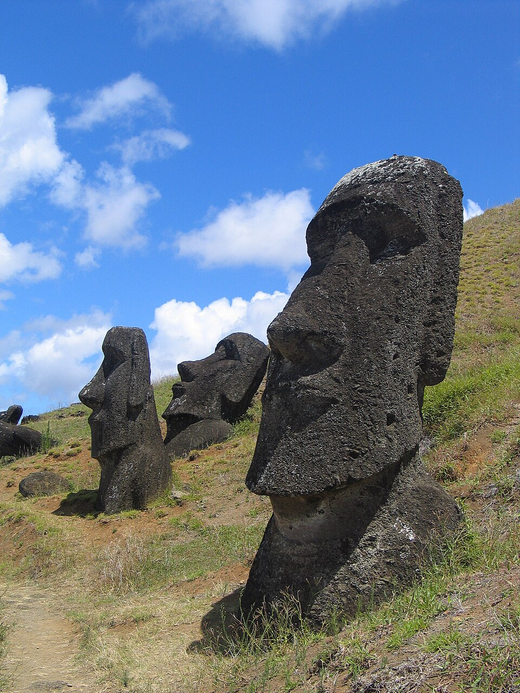
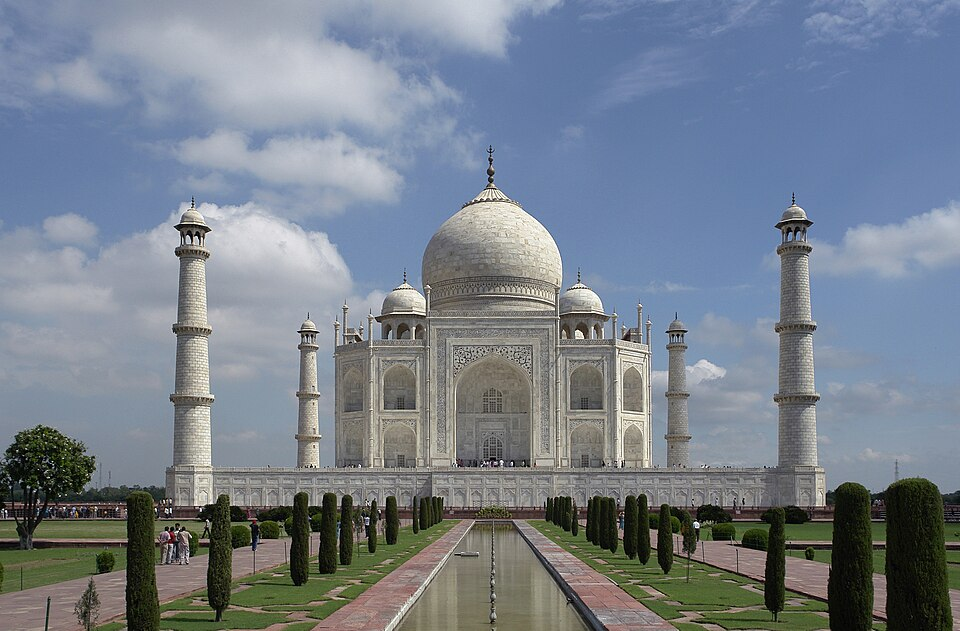

Home › Works
Works
 c. 2600–2400 BCE
c. 2600–2400 BCEStandard of Ur
Unknown artist · Craft & Decorative
 c. 2500 BCE
c. 2500 BCEGreat Sphinx of Giza
Unknown artist · Sculpture
 c. 1754 BCE
c. 1754 BCEStele of Hammurabi
Unknown artist · Sculpture
 c. 1345 BCE
c. 1345 BCEBust of Nefertiti
Thutmose · Sculpture
 c. 1323 BCE
c. 1323 BCEMask of Tutankhamun
Unknown artist · Craft & Decorative

c. 575 BCEIshtar Gate
Unknown artist · Architecture
 c. 460–450 BCE
c. 460–450 BCEDiscobolus (Discus Thrower)
Myron · Sculpture
 447–432 BCE
447–432 BCEThe Parthenon
Phidias · Architecture
 c. 210 BCE
c. 210 BCETerracotta Army
Unknown artist · Sculpture
 1st century BCE – 1st century CE
1st century BCE – 1st century CELaocoön and His Sons
Unknown artist · Sculpture
 early 1st century CE
early 1st century CEAugustus of Prima Porta
Unknown artist · Sculpture
 c. 126 CE
c. 126 CEThe Pantheon
Unknown artist · Architecture
 537 CE
537 CEHagia Sophia
Anthemius of Tralles and Isidore of Miletus · Architecture
 691–692 CE
691–692 CEDome of the Rock
Unknown artist · Architecture
 c. 725 CE
c. 725 CEYaxchilan Lintel 24
Unknown artist · Sculpture
 c. 800
c. 800Book of Kells
Unknown artist · Manuscript & Textile
c. 800 CEBorobudur
Unknown artist · Architecture
 c. 1000
c. 1000Travelers Among Mountains and Streams
Fan Kuan · Painting
 c. 1070s
c. 1070sBayeux Tapestry
Unknown artist · Manuscript & Textile
early 12th centuryAngkor Wat
Unknown artist · Architecture
 rebuilt after 1194
rebuilt after 1194Chartres Cathedral
Unknown artist · Architecture
 12th–15th century
12th–15th centuryIfe head
Unknown artist · Sculpture
 c. 1305
c. 1305Scrovegni Chapel frescoes
Giotto · Painting
 mostly 13th–14th century
mostly 13th–14th centuryThe Alhambra
Unknown artist · Architecture

c. 1250–1500Moai
Unknown artist · Sculpture
 1434
1434The Arnolfini Portrait
Jan van Eyck · Painting
 c. 1450
c. 1450Machu Picchu
Unknown artist · Architecture
 c. 1484–86
c. 1484–86The Birth of Venus
Sandro Botticelli · Painting
 c. 1495–98
c. 1495–98The Last Supper
Leonardo da Vinci · Painting
 1501–04
1501–04David
Michelangelo · Sculpture
 c. 1503–19
c. 1503–19Mona Lisa
Leonardo da Vinci · Painting
 1508–12
1508–12Sistine Chapel Ceiling
Michelangelo · Painting
 1509–11
1509–11The School of Athens
Raphael · Painting
 1514
1514Melencolia I
Albrecht Dürer · Print & Drawing
 1565
1565The Hunters in the Snow
Pieter Bruegel the Elder · Painting
 1599–1600
1599–1600The Calling of Saint Matthew
Caravaggio · Painting
 16th–17th century
16th–17th centuryBenin Bronzes
Unknown artist · Sculpture
 c. 1620
c. 1620Judith Slaying Holofernes
Artemisia Gentileschi · Painting

1632–53Taj Mahal
Unknown artist · Architecture
 1642
1642The Night Watch
Rembrandt van Rijn · Painting
 1647–52
1647–52The Ecstasy of Saint Teresa
Gian Lorenzo Bernini · Sculpture
 1656
1656Las Meninas
Diego Velázquez · Painting
 c. 1665
c. 1665Girl with a Pearl Earring
Johannes Vermeer · Painting
 1767–68
1767–68The Swing
Jean-Honoré Fragonard · Painting
 1793
1793The Death of Marat
Jacques-Louis David · Painting
 1814
1814The Third of May 1808
Francisco Goya · Painting
 1830
1830Liberty Leading the People
Eugène Delacroix · Painting
 c. 1831
c. 1831The Great Wave off Kanagawa
Katsushika Hokusai · Print & Drawing
 1844
1844Rain, Steam and Speed
J. M. W. Turner · Painting
 1849
1849The Stone Breakers
Gustave Courbet · Painting
 1863
1863Olympia
Édouard Manet · Painting
 1872
1872Impression, Sunrise
Claude Monet · Painting
 1884–86
1884–86A Sunday Afternoon on the Island of La Grande Jatte
Georges Seurat · Painting
 1889
1889The Starry Night
Vincent van Gogh · Painting
 1887–89
1887–89Eiffel Tower
Gustave Eiffel's company · Architecture
 c. 1893
c. 1893The Basket of Apples
Paul Cézanne · Painting
1907Les Demoiselles d'Avignon
Pablo Picasso · Painting
 1910
1910The Dance (II)
Henri Matisse · Painting
 1913
1913Composition VII
Wassily Kandinsky · Painting
 1915
1915Black Square
Kazimir Malevich · Painting
 1917
1917Fountain
Marcel Duchamp · Installation & Digital
1931The Persistence of Memory
Salvador Dalí · Painting
 1935–37
1935–37Fallingwater
Frank Lloyd Wright · Architecture
1937Guernica
Pablo Picasso · Painting
1939The Two Fridas
Frida Kahlo · Painting
1942Nighthawks
Edward Hopper · Painting
1942–43Broadway Boogie Woogie
Piet Mondrian · Painting
1950Autumn Rhythm (Number 30)
Jackson Pollock · Painting
1962Campbell's Soup Cans
Andy Warhol · Painting
1965 onwardInfinity Mirror Rooms
Yayoi Kusama · Installation & Digital
1977Warlugulong
Clifford Possum Tjapaltjarri and Tim Leura · Painting
1982Untitled (Skull)
Jean-Michel Basquiat · Painting
1991The Physical Impossibility of Death in the Mind of Someone Living
Damien Hirst · Installation & Digital
 1997
1997Guggenheim Museum Bilbao
Frank Gehry · Architecture
1999Maman
Louise Bourgeois · Sculpture
2010Sunflower Seeds
Ai Weiwei · Installation & Digital
2018Love is in the Bin
Banksy · Painting
2021Everydays: The First 5000 Days
Beeple · Installation & Digital